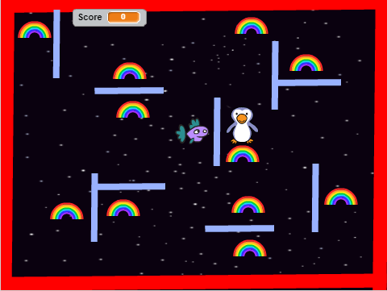
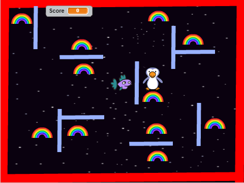

Portfolio
Scratch Game: Catching Fish
 
Click here to play

Click here to play
Catching Fish is a two-player game. The penguin player have to catch the fish
before itthe fish player eats all the rainbow to raise their score which
is 1 point for each rainbow. This game has 3 levels which is easy, medium, and hard.
If the fish eats all the rainbow before the penguin can catch it, then the fish
player wins. If the penguin catching before the fish can eats all the rainbow then
the penguin player wins.
I decide to create this game because I used to play the similar game and it
is very interesting for me. The first successful point in the development process of
my game is fish and peguin are sprite. The another successful is my home screen
where I put the 3 buttons of game level. The two obstacles that I have in the
development of my game are the more bolck and the scoring. If I have more time to
work on my game, I will change the frame to be more nicely.
On the left is an algorithm that contributes significantly to the game. Because it shows
how the character changes by pressing the up and down, left and right. In particular,
the fish makes the movement by 1 when clicking these four arrows.